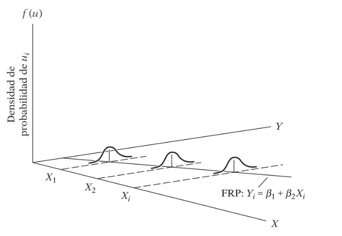
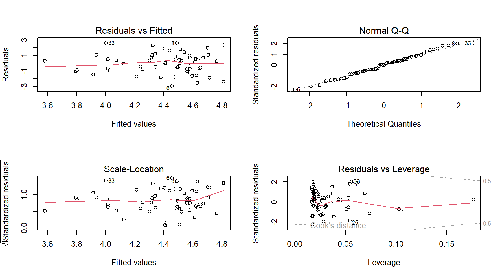
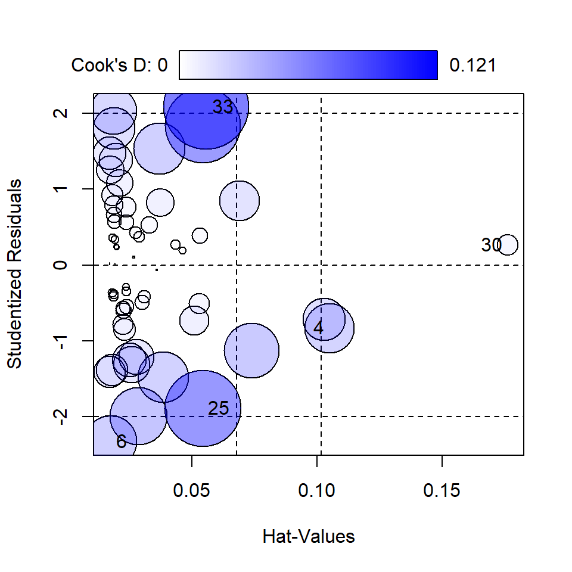

pais gasto_militar17 gasto_edu16
1 Afganistán 0.9068569412 4.20525
2 Albania 1.2441751239 3.95464
3 Argentina 0.9096629933 5.57218
4 Armenia 3.9680393674 2.75812
5 Azerbaiyán 3.9373999369 2.90341
6 Bangladesh 1.3807504138 1.53554
7 Belarús 1.1919853143 4.94655
8 Belice 1.2530838896 7.06045
9 Benin 1.2163217396 3.99469
10 Brunei Darussalam 2.8792250162 4.42541
11 Burundi 1.9831535621 4.61813
12 Cabo Verde 0.5420811232 5.36651
13 Camerún 1.3165941862 2.68755
14 Chile 1.9100618544 5.35064
15 Colombia 3.1022327050 4.52091
16 Congo, República Democrática del 0.6987735959 2.11869
17 Costa Rica 0.0000000000 7.11873
18 Côte d'Ivoire 1.2804434296 4.94837
19 El Salvador 0.9005176939 3.86991
20 Georgia 2.2251392292 3.78477
21 Ghana 0.4060350550 5.76632
22 Guatemala 0.3732213478 2.83281
23 Guinea 2.3324667356 2.51800
24 Guyana 1.4436772536 6.06100
25 Haití 0.0008874827 2.44959
26 Honduras 1.5782303116 6.30177
27 Irán, República Islámica del 3.0992593495 3.36576
28 Jamaica 0.9035377847 5.31866
29 Japón 0.9349600138 3.46746
30 Jordania 4.7977879047 3.89621
31 Kazajstán 0.8412224616 2.97810
32 Kenya 1.2307076293 5.36267
33 Kirguistán 3.1581710557 6.58615
34 Liberia 0.6381542056 4.00885
35 Malasia 1.1254530523 4.82754
36 Malawi 0.7701815595 4.74857
37 Malí 3.0540937475 3.09071
38 Mauricio 0.1806502692 5.01360
39 Mongolia 0.7371034337 5.18212
40 Nepal 1.5527522697 4.44099
41 Nicaragua 0.6099226660 4.11264
42 Níger 2.6747584248 4.04160
43 Nueva Zelandia 1.1584442250 6.30374
44 Pakistán 3.4954831621 2.49180
45 Paraguay 1.1841593158 4.52037
46 Perú 0.9773833671 3.81827
47 Reino Unido 1.8348367707 5.54179
48 República de Moldova 0.4206777465 6.66130
49 Rwanda 0.9745172897 3.53979
50 Senegal 1.8966349226 6.62561
51 Serbia 1.8285005701 3.86178
52 Seychelles 1.5655817347 4.41832
53 Sierra Leona 0.7233298489 3.06023
54 Sri Lanka 2.1719720294 3.47508
55 Sudáfrica 1.0474903232 5.94059
56 Suiza 0.6836302129 5.12430
57 Togo 1.9352608797 5.06326
58 Ucrania 3.4129745864 5.01437
59 Uganda 1.6750659682 2.55882Análisis de Regresión
Problema
Descripción del problema
Gasto militar vs Gasto en Educación: previamente se evidenció a través de gráficos de dispersión y métricas de correlación, la relación negativa entre la inversión militar y la inversión en educación. Se sugiere construir un modelo de regresión lineal simple que permita determinar el cambio en \(y\) dado \(x\), es decir, que el modelo permitirá establecer por cada unidad que aumenta el gasto militar, cuánto disminuye el gasto en educación. El modelo se puede expresar de la siguiente manera:
- Modelo matemático: \(y = mx + b\)
- Modelo estadístico 1: \(y = \beta_0\ +\ \beta_1X\)
- Modelo estadístico 2: \(\hat{y_i} = \hat{\beta_0}\ + \hat{\beta_1}X_i\ + \epsilon_i\)
Gasto Militar vs Gasto Educación
Base de datos
Distribuciones
Gasto militar
Gasto Educación
Gráficos de dispersión
Con valor atípico
Sin valor atípico

Correlación
Concepto
El coeficiente de correlación de Pearson es una medida lineal entre dos variables aleatorias cuantitativas. A diferencia de la covarianza, la correlación es independiente de la escala de medida.
Este coeficiente puede ser de dos tipos:
- Paramétrico: sujeto a distribución normal o gausiana.
- No paramétrico: no está sujeto a distribución normal o gausiana.
\[\rho_{(X,Y)} = \frac{Cov_{(X,Y)}}{\sigma_X\times\sigma_Y} = \frac{\sum_{i=1}^{n}(X_i-\mu_X)(Y_i-\mu_Y)}{\sigma_X\times\sigma_Y}\]
Interpretación de \(\rho\)

Relaciones Lineales: análisis exploratorio

Prueba de Hipótesis para \(\rho\)
- Correlación de Pearson con dato atípico:
[1] 0.005680844
Test de hipótesis con valor atípico
\[H_0: \rho = 0\\H_1: \rho \neq 0\]
Pearson's product-moment correlation
data: datos$gasto_militar17 and datos$gasto_edu16
t = 0.043265, df = 58, p-value = 0.9656
alternative hypothesis: true correlation is not equal to 0
95 percent confidence interval:
-0.2486025 0.2592316
sample estimates:
cor
0.005680844
Conclusión: como el valor p (0.9656) es mayor que el nivel de significancia \(\alpha = 0.05\), no existe evidencia para rechazar la hipótesis nula.
Prueba de Hipótesis para \(\rho\)
- Correlación de Pearson sin dato atípico:
[1] -0.2046813Test de hipótesis sin valor atípico
\[H_0: \rho = 0\\H_1: \rho \neq 0\]
Pearson's product-moment correlation
data: df_reg$gasto_militar17 and df_reg$gasto_edu16
t = -1.5787, df = 57, p-value = 0.1199
alternative hypothesis: true correlation is not equal to 0
95 percent confidence interval:
-0.43781539 0.05424418
sample estimates:
cor
-0.2046813 Regresión Lineal Simple (RLS)
Origen: Francis Galton

Idea intuitiva RLS

Modelo tentativo
El modelo tentativo se puede expresar de la siguiente manera:
\[G.Edu = \beta_0\ +\ \beta_1G.Militar\]
RLS: percepción geométrica

RLS: ajuste de parámetros
\[f(x|\mu,\sigma^2) = \frac{1}{\sqrt{2\pi\sigma^2}}e^{-\frac{(x-\mu)^2}{2\sigma^2}}\]
RLS: función muestral
Función matemática
\[Y_i = E(Y|X_i)\ +\ \epsilon_i\\\]
Asumiendo que \(E(Y|X_i)\) es lineal en \(X_i\):
\[Y_i = E(Y|X_i)\ +\ \epsilon_i\\ Y_i = \beta_0 +\ \beta_1X_i\ +\ \epsilon_i\]
Tomando el valor esperado (esperanza matemática) a ambos lados:
\[E(Y_i|X_i)\ =\ E[E(Y|X_i)] + E(\epsilon_i|X_i)\\ E(Y_i|X_i)\ =\ E(Y|X_i)\ +\ E(\epsilon_i|X_i)\]
Como \(E(Y_i|X_i)\) es igual a \(E(Y|X_i)\), la ecuación anterior determina que \(E(\epsilon_i|X_i) = 0\). Este supuesto implica que la media condicional de \(\epsilon_i\) es cero.
Parámetros \(\beta_0\) y \(\beta_1\)
Mínimos Cuadrados
El propósito principal del análisis de regresión es estimar la función de regresión poblacional con base en la función de regresión muestral:
\[Y_i = \beta_0\ +\ \beta_1X\] \[\hat{Y_i} = \hat{\beta_0}\ + \hat{\beta_1}X_i\ + \hat{\epsilon_i}\]

Supuestos matemáticos
- Linealidad en los parámetros.
- Valores de \(X\) independientes del término residual \(\epsilon\).
Valor medio de los residuales igual a cero: \(E(\epsilon_i|X_i) = 0\). Homocedasticidad o varianza constante de los errores \(\epsilon_i\). - Independencia de los errores (autocorrelación): \(cov(\epsilon_i, \epsilon_j)=0\).
\[\epsilon\ \overset{\text{i.i.d.}}\sim\ N(\mu = 0,\ \sigma^2 = 1)\]
Normalidad de los residuos
\[E(\epsilon_i|X_i)=0\]

Homocedasticidad
\[Var(\epsilon_i) = E[\epsilon_i-E(\epsilon_i|X_i)]^2\\ = E(\epsilon_i^2|X_i) \\ = E(\epsilon_i^2)\\ = \sigma^2\]

¿Heterocedasticidad?
Regresión Lineal con R
Función lm() - summary()
#<b>
mod1 <- lm(gasto_edu16 ~ gasto_militar17, data = df_reg)
#</b>
resumen_modelo <- summary(mod1)
resumen_modelo
Call:
lm(formula = gasto_edu16 ~ gasto_militar17, data = df_reg)
Residuals:
Min 1Q Median 3Q Max
-2.92035 -0.83829 0.02911 0.80882 2.58509
Coefficients:
Estimate Std. Error t value Pr(>|t|)
(Intercept) 4.8092 0.3058 15.727 <2e-16 ***
gasto_militar17 -0.2559 0.1621 -1.579 0.12
---
Signif. codes: 0 '***' 0.001 '**' 0.01 '*' 0.05 '.' 0.1 ' ' 1
Residual standard error: 1.313 on 57 degrees of freedom
Multiple R-squared: 0.04189, Adjusted R-squared: 0.02509
F-statistic: 2.492 on 1 and 57 DF, p-value: 0.1199Graficando recta (estático)
Graficando recta (ggplotly)
library(plotly)
ggplotly(df_reg %>%
ggplot(data = ., aes(x = gasto_militar17, y = gasto_edu16)) +
geom_point() + theme_light() +
geom_smooth(method = "lm", se = FALSE, color = "forestgreen", lwd = 1.2) +
labs(x = "G. Militar (% del PIB)",
y = "G. Educación (% del PIB)",
title = "Modelo ajustado\nggplot2"))Graficando recta (plot_ly)
library(plotly)
df_reg %>%
plot_ly(x = ~gasto_militar17) %>%
add_markers(y = ~gasto_edu16) %>%
layout(title = "Modelo ajustado\nplotly",
width = 600, height = 300,
xaxis = list(title = "G. Militar (% del PIB)"),
yaxis = list(title = "G. Educación (% del PIB)")) %>%
add_lines(x = ~gasto_militar17, y = fitted(mod1)) %>%
layout(showlegend = FALSE)Diagnósticos del modelo
- Análisis de residuales:
- Residuales ordinarios:
residuals() - Residuales estandarizados:
rstandard() - Residuales estudentizados:
rstudent() - Tarea: ¿Cuál es la diferencia entre los tipos de residuales? ¿Cuándo usar cada uno y por qué?
- Leer.
- Residuales con R.
- Residuales ordinarios:
Residuales ordinarios con R
par(mfrow = c(2, 2))
#<b>
plot(mod1)
#</b>Normalidad de residuales
#<b>
errores <- mod1$residuals # Residuales del modelo
#</b>
par(mfrow = c(1, 2))
hist(errores, main = "Histograma de residuales")
abline(v = mean(errores), col = "red", lwd = 2)
qqnorm(errores, main = "Gráfico cuantil-cuantil")
qqline(errores, col = "red")Homocedasticidad de residuales
#<b>
predichos <- mod1$fitted.values
#</b>
plot(predichos, errores, main = "Residuales vs Predichos")
abline(lm(errores ~ predichos), col = "red", lty = 2)
abline(h = 2, col = "blue", lty = 2)
abline(h = -2, col = "blue", lty = 2)Medidas de influencia
# <b>
library(car)
influencePlot(mod1)
StudRes Hat CookD
4 -0.8312276 0.10496570 0.040736041
6 -2.3284733 0.01746053 0.044706663
25 -1.8881594 0.05415889 0.097674574
30 0.2618339 0.17620806 0.007453931
33 2.0838759 0.05565281 0.120870520# </b>Diagnósticos del modelo | Contraste de hipótesis (lmtest)
- Shapiro Wilk - Normalidad:
shapiro.test(errores)
##
## Shapiro-Wilk normality test
##
## data: errores
## W = 0.98764, p-value = 0.8122- Breusch Pagan - Homocedasticidad:
# <b>
library(lmtest)
# </b>
bptest(mod1)
##
## studentized Breusch-Pagan test
##
## data: mod1
## BP = 1.2889, df = 1, p-value = 0.2563
- Durbin-Watson - Autocorrelación:
dwtest(mod1, order.by = NULL)
##
## Durbin-Watson test
##
## data: mod1
## DW = 2.5595, p-value = 0.9863
## alternative hypothesis: true autocorrelation is greater than 0- Harvey/Collier - Linealidad:
harvtest(mod1, order.by = NULL)
##
## Harvey-Collier test
##
## data: mod1
## HC = 0.82571, df = 56, p-value = 0.4125Bondad de ajuste del modelo (R2)
resumen_modelo$adj.r.squared
## [1] 0.02508557
resumen_modelo$r.squared
## [1] 0.04189444
Modelo final
library(ggpmisc)
ggplot(data = df_reg, aes(x = gasto_militar17, y = gasto_edu16)) +
geom_point() + theme_light() +
geom_smooth(method = "lm", se = TRUE, color = "firebrick", lwd = 1.2) +
labs(x = "G. Militar (% del PIB)", y = "G. Educación (% del PIB)",
title = "Modelo final de RLS") +
stat_poly_eq(aes(label = paste(..eq.label.., ..adj.rr.label.., sep = "~~~~")),
formula = y ~ x, parse = TRUE, label.x.npc = 0.9, color="black")Intervalos de confianza de \(\beta_0\) y \(\beta_1\)
- Función
confint()
# <b>
confint(mod1, level = 0.95) 2.5 % 97.5 %
(Intercept) 4.1968927 5.421542
gasto_militar17 -0.5804712 0.068682#</b>Estimaciones y Predicciones
- Función
predict() - Estimación: estimar cúal es el gasto
promedio en educación para un país que tiene 2.15% del PIB en inversión militar.
predict(object = mod1, newdata = data.frame(gasto_militar17 = c(2.1)),
interval = "confidence", level = 0.95) fit lwr upr
1 4.271839 3.887763 4.655915- Predicción: predecir cúal es el gasto en educación para un país que tiene 2.15% del PIB en inversión militar.
predict(object = mod1, newdata = data.frame(gasto_militar17 = c(2.1)),
interval = "prediction", level = 0.95) fit lwr upr
1 4.271839 1.613811 6.929867